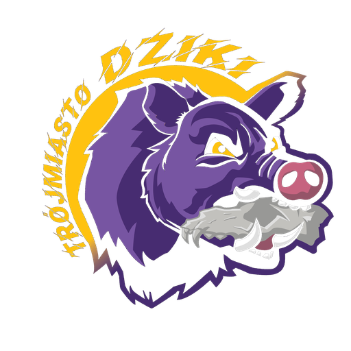

Stowarzyszenie • Sport alternatywny • Trójmiasto
Organizujemy otwarte treningi, wydarzenia i turnieje Juggera - dynamicznego sportu drużynowego łączącego ruch, strategię i walki bronią bezpieczną (otulinową).

Czym jest Jugger?
Jugger to sport, w którym dwie pięcioosobowe drużyny rywalizują o zdobycie punktów. Jeden zawodnik - qwik - stara się umieścić piłkę w bramce przeciwnika, a pozostali zawodnicy - enforcerzy - wspierają go, używając bezpiecznej broni piankowej.
Gra łączy elementy sportu kontaktowego, strategii drużynowej, refleksu i współpracy. Treningi są otwarte dla wszystkich chętnych - niezależnie od wieku, doświadczenia czy kondycji.
Treningi
Park Kiloński
Poniedziałki
18:00 - 20:00
Park Reagana
Czwartki
18:00 - 20:00
O stowarzyszeniu
Regularnie prowadzimy otwarte treningi Juggera dla wszystkich chętnych oraz współorganizujemy wydarzenia, turnieje i inicjatywy promujące sport alternatywny.
Współpracujemy z drużynami z Polski i zagranicy, uczestniczymy w konwentach oraz popularyzujemy aktywny i zdrowy tryb życia oparty na zasadach fair play.